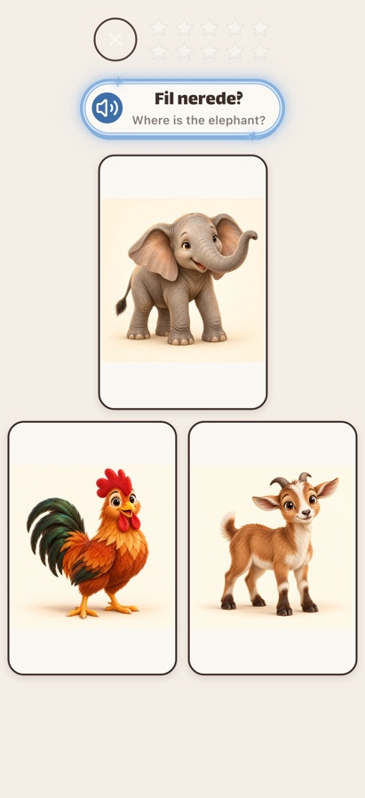
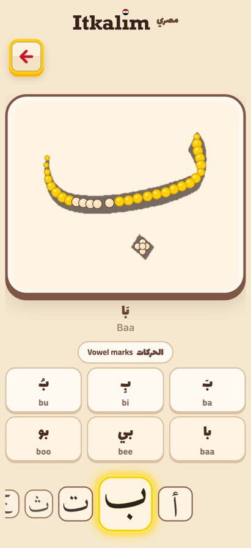
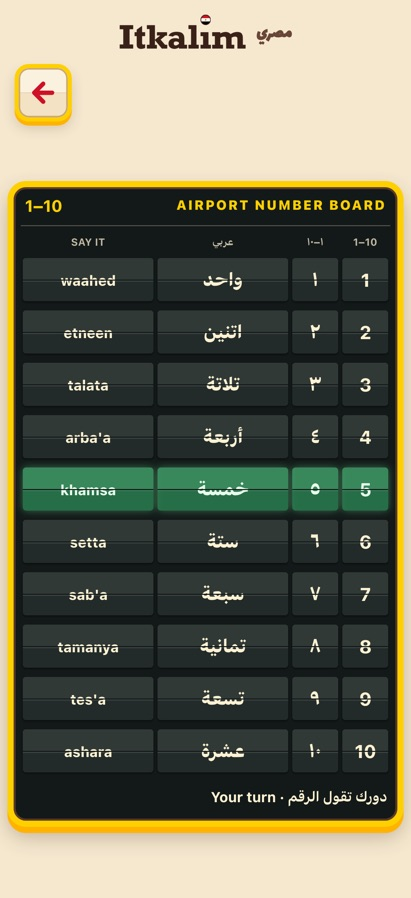
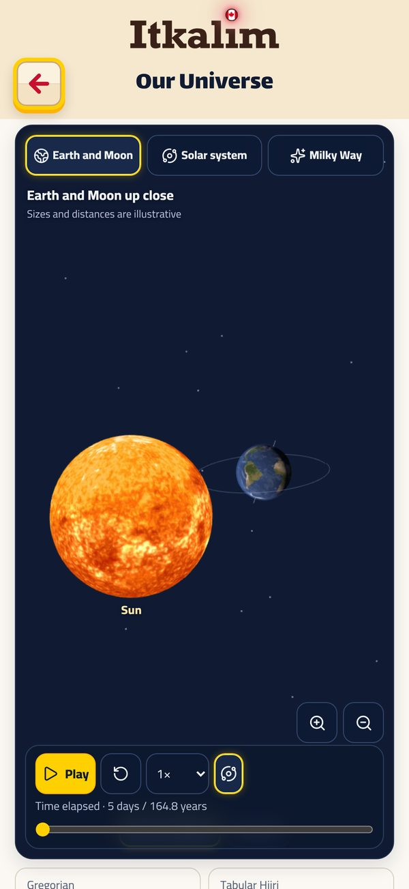

™
™Itkalim · اتكلم · “speak”
The world’s languages,
made for little ones.
First words in your family’s language. Real voices, gentle play, no ads.
Why Itkalim
Children are losing their family’s language.
1.4 millionpeople in the US speak Arabic at home, up from 215,000 in 1980.
2 in 3Arabic-speaking children aged 5 to 17 in the US were born here.
Watch ≠ speakVideo lessons ask toddlers to sit still. Children learn words by doing.
Figures: Pew Research Center, 2023.
How we solve it
Touch. Choose. Listen. Say it.






Real voices
Recorded by people who speak it every day.


Thank you, Ranoona and Dr. Kadriye, for giving Itkalim your voices. Parents can add their own, too.
Why it’s premium
Made with the care a child deserves.
🎙️Real native voicesNever synthetic, never cloned.
🛡️No ads, no trackingBuilt for Apple’s Kids Category.
✈️Works offlineEverything is inside the app.
🔭Real sciencePlanets placed for today’s date.
🏠Your voice stays homeRecordings never leave the phone.
✅Tested before it shipsEvery release is reviewed and checked.
Our story
Built by a parent.
Ashraf wanted his toddlers to speak the family language, not just watch videos about it. So he built games they could touch, with the voices of the people they love.
Read our storyEvery language
One app, the world’s languages.
🇪🇬 Egyptian Arabic Ready🇹🇷 Türkçe · Turkish Ready🇨🇦 Canadian English Ready🇧🇬 Български · Bulgarian Coming next
Want another language next? Tell us.